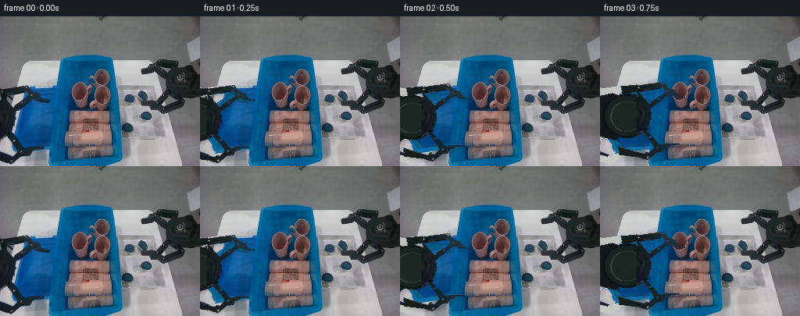
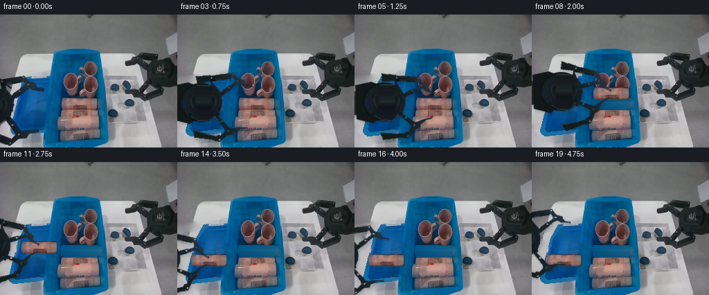
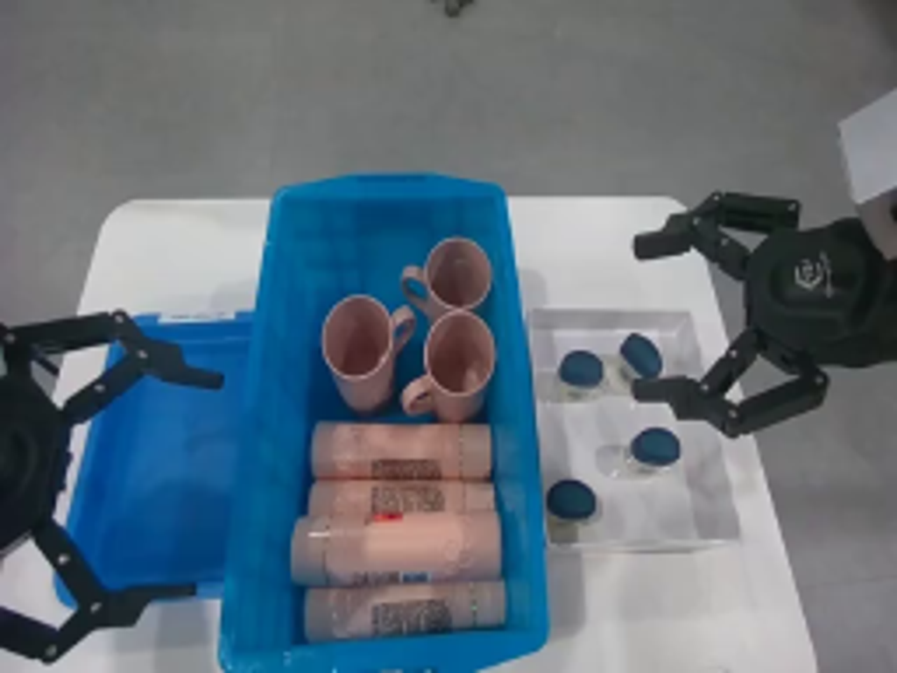
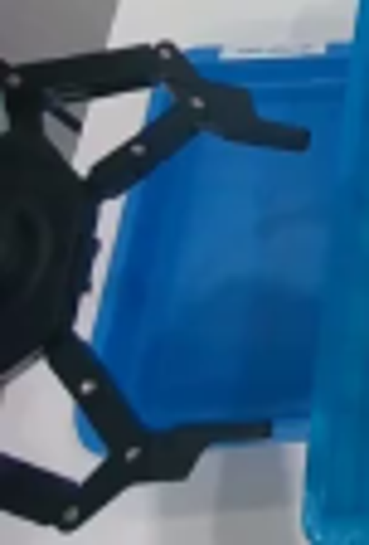
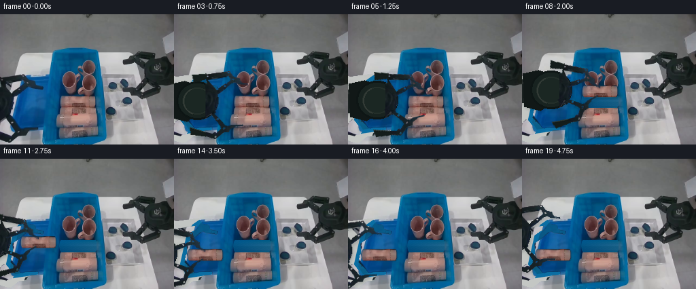
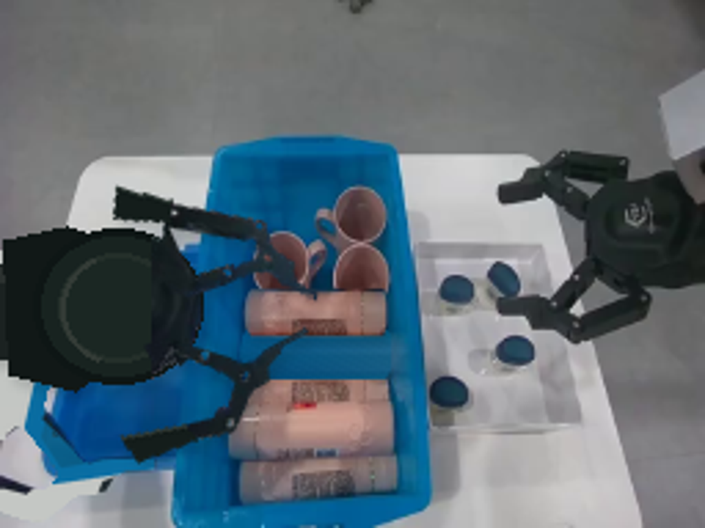
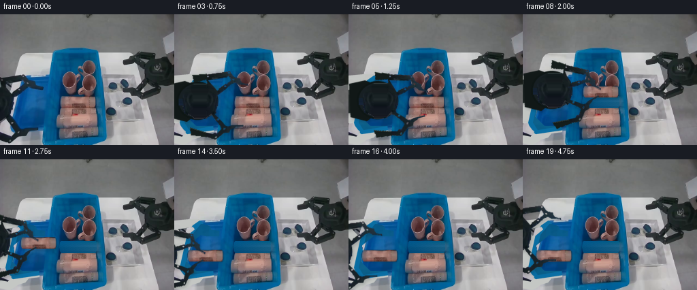
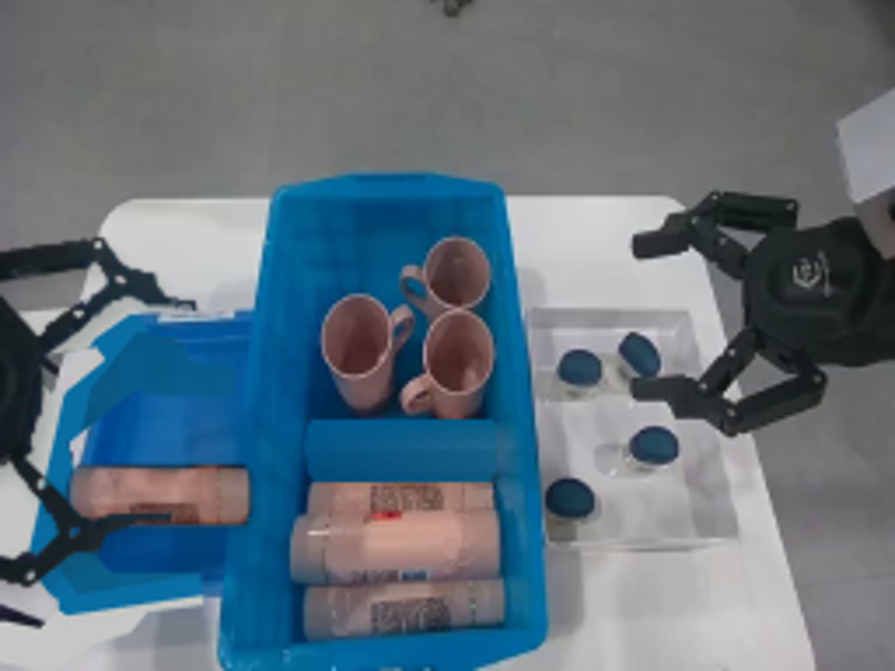

CODING AGENTS AS PIXEL WORLD MODELS
traex/GPT-6.1-Sol · common50_0003
点击播放 · 原生 RGB 像素
逐轮保存的候选
回放视频、检查图与代码变化。
每份候选均可单独播放。实际图片检查记录在下方工具轨迹中。
候选 01播放与检查图
点击播放 · 原生 RGB 像素


展开代码变化
--- 上一保存版本
+++ 本次保存版本
@@ -0,0 +1,166 @@
+from pathlib import Path
+import math
+import numpy as np
+from PIL import Image, ImageDraw, ImageFilter
+import artifact_io
+
+ROOT=Path(__file__).resolve().parent
+W,H=256,192
+im=Image.open(ROOT/'first_frame.png').convert('RGB')
+src=np.array(im)
+S=4
+
+def poly_mask(points,holes=()):
+ m=Image.new('L',(W*S,H*S),0); d=ImageDraw.Draw(m)
+ d.polygon([(int(x*S),int(y*S)) for x,y in points],fill=255)
+ for hole in holes:d.polygon([(int(x*S),int(y*S)) for x,y in hole],fill=0)
+ return m.resize((W,H),Image.Resampling.LANCZOS)
+
+# Separately articulated, rigid jaw assemblies, sampled from the first image.
+top_poly=[(-10,93),(33,88),(36,89),(41,95),(50,99),(51,103),(64,106),(63,111),(48,110),(39,108),(17,124),(12,123),(-8,108)]
+top_holes=[[(3,102),(28,98),(32,103),(16,116)]]
+bot_poly=[(-8,145),(8,147),(28,167),(55,166),(56,171),(41,172),(36,174),(34,179),(25,181),(14,189),(-8,185),(-10,176),(10,181),(19,174),(-5,154)]
+body_poly=[(-12,103),(1,106),(11,114),(17,124),(18,137),(15,150),(8,156),(-4,161),(-12,157)]
+mt=np.array(poly_mask(top_poly,top_holes),dtype=float)/255
+mb=np.array(poly_mask(bot_poly),dtype=float)/255
+mc=np.array(poly_mask(body_poly),dtype=float)/255
+# Exclude the table and blue tray visible through the linkage.
+maxc=src.max(2).astype(float)
+neutral=(src[:,:,2].astype(float)-src[:,:,0].astype(float))
+dark=np.clip((92-maxc)/22,0,1)*np.clip((48-neutral)/15,0,1)
+mt*=dark; mb*=dark; mc*=dark
+full=np.maximum.reduce([mt,mb,mc])
+# Include tiny fringes of the original mechanism when rebuilding its background.
+mask=Image.fromarray(np.uint8(full*255)).filter(ImageFilter.MaxFilter(3))
+alpha=np.array(mask,dtype=float)/255
+
+# Reconstruct only newly uncovered pixels, respecting the outlines of the left tray.
+yy,xx=np.mgrid[:H,:W]
+tray=poly_mask([(37,90),(76,87),(66,169),(19,176),(11,170),(8,159),(19,110),(27,97)])
+inner=poly_mask([(39,95),(74,93),(64,163),(22,170),(15,159),(26,111)])
+tray_a=np.array(tray,dtype=float)/255
+inner_a=np.array(inner,dtype=float)/255
+# Smooth, locally sampled blue surface with original photographic detail.
+texx=np.clip(45+(xx%17),45,63)
+texy=np.clip(110+(yy%45),110,154)
+tex=src[texy,texx].astype(float)
+# Sample the unobstructed tray interior and retain its natural illumination.
+blue=np.stack([8+0.08*(yy-120),86+0.19*(yy-100)+0.13*(xx-40),132+0.16*(yy-100)+0.18*(xx-40)],axis=2)
+blue += (tex-tex.mean(axis=(0,1)))*0.24
+rim=np.stack([9+xx*.03,108+xx*.06,160+xx*.10],axis=2)
+table=np.stack([191+yy*.025,194+yy*.022,192+yy*.017],axis=2)
+# Natural table pattern drawn from an unoccluded part of this image.
+local=src[np.clip(yy,60,191),np.clip(178+xx%24,178,201)].astype(float)
+local=local-local.mean(axis=(0,1))
+table+=np.clip(local,-12,12)*.11
+back=table*(1-tray_a[:,:,None])+rim*tray_a[:,:,None]
+back=back*(1-inner_a[:,:,None])+blue*inner_a[:,:,None]
+# Background is unchanged everywhere not occluded by the moving left gripper.
+clean=src.astype(float)*(1-alpha[:,:,None])+back*alpha[:,:,None]
+clean=np.uint8(np.clip(clean,0,255))
+
+# Shampoo/laundry bottle on the upper row; labels and shape are copied, not invented.
+obj_mask=poly_mask([(91,120),(139,120),(141,123),(141,133),(139,137),(91,137),(89,134),(88,128),(89,123)])
+obj_alpha=np.array(obj_mask,dtype=float)/255
+# The floor of the bin exposed by lifting the bottle. Keep the neighboring cups intact.
+bin_floor=np.empty_like(src,dtype=float)
+for y in range(H):
+ l=src[min(max(y,119),137),84].astype(float)
+ r=src[min(max(y,119),137),146].astype(float)
+ for x in range(W):
+ t=np.clip((x-84)/62,0,1)
+ bin_floor[y,x]=l*(1-t)+r*t
+# Tiny fixed sensor/photographic texture.
+noise=((xx*13+yy*7)%11-5)[...,None]*.23
+bin_floor+=noise
+obj_remove=np.array(obj_mask.filter(ImageFilter.MaxFilter(3)),dtype=float)/255
+# Preserve the rim of the cup directly above and the bottle below.
+obj_remove[yy<120]=0;obj_remove[yy>137]=0
+clean_empty=np.uint8(np.clip(clean.astype(float)*(1-obj_remove[:,:,None])+bin_floor*obj_remove[:,:,None],0,255))
+
+# Wide canvas permits the rigid wrist and attached forearm to enter from off camera.
+PAD=160
+CW,CH=W+2*PAD,H+2*PAD
+
+def original_sprite(a):
+ layer=Image.new('RGBA',(CW,CH),(0,0,0,0))
+ rgba=np.dstack([src,np.uint8(np.clip(a*255,0,255))])
+ layer.paste(Image.fromarray(rgba,'RGBA'),(PAD,PAD))
+ return layer
+
+top=original_sprite(mt);bottom=original_sprite(mb)
+# Complete the parts of the two rigid links originally outside the field of view.
+for layer,points in [(top,[(-20,94),(0,92),(2,100),(-17,105)]),(bottom,[(-23,171),(-1,178),(0,185),(-22,182)])]:
+ d=ImageDraw.Draw(layer)
+ d.polygon([(x+PAD,y+PAD) for x,y in points],fill=(20,29,27,255))
+ d.line([(x+PAD,y+PAD) for x,y in points[:2]],fill=(42,51,47,255),width=2)
+
+palm=Image.new('RGBA',(CW,CH),(0,0,0,0))
+d=ImageDraw.Draw(palm)
+def P(p):return [(x+PAD,y+PAD) for x,y in p]
+# Rigid forearm, wrist collar and machined palm. Their unseen completion is kept
+# behind the original photographic material and never changes shape.
+d.polygon(P([(-170,117),(-47,117),(-29,124),(-30,143),(-48,151),(-170,154)]),fill=(27,34,33,255))
+d.polygon(P([(-170,118),(-46,118),(-37,123),(-167,129)]),fill=(43,49,47,255))
+d.polygon(P([(-54,108),(-31,103),(-14,109),(-10,149),(-28,163),(-52,157)]),fill=(17,24,23,255))
+d.ellipse((PAD-43,PAD+104,PAD+18,PAD+160),fill=(24,35,32,255),outline=(14,22,21,255),width=3)
+d.ellipse((PAD-34,PAD+113,PAD+9,PAD+152),fill=(27,39,35,255),outline=(36,47,42,255),width=2)
+d.arc((PAD-33,PAD+113,PAD+8,PAD+153),110,245,fill=(51,59,54,255),width=2)
+# The visible right-hand surface of this wrist is exactly the original image.
+palm.alpha_composite(original_sprite(mc))
+
+obj=original_sprite(obj_alpha)
+
+def transform(layer,dx=0,dy=0,ang=0,pivot=(0,0),scale=1):
+ a=math.radians(ang);c=math.cos(a)*scale;s=math.sin(a)*scale
+ px,py=pivot[0]+PAD,pivot[1]+PAD
+ det=c*c+s*s
+ ai,bi,di,ei=c/det,s/det,-s/det,c/det
+ tx=px+dx-c*px+s*py;ty=py+dy-s*px-c*py
+ coeff=(ai,bi,-ai*tx-bi*ty,di,ei,-di*tx-ei*ty)
+ return layer.transform((CW,CH),Image.Transform.AFFINE,coeff,Image.Resampling.BICUBIC)
+
+def ease(t):return t*t*(3-2*t)
+def interp(keys,i):
+ for j in range(len(keys)-1):
+ ta,va=keys[j];tb,vb=keys[j+1]
+ if ta<=i<=tb:
+ a=ease((i-ta)/(tb-ta))
+ return np.array(va)*(1-a)+np.array(vb)*a
+ return np.array(keys[-1][1])
+
+# Approach -> close jaws -> vertical lift -> move left -> lower -> release -> retreat.
+path=[(0,(0,0)),(4,(55,-6)),(6,(55,-6)),(8,(55,-21)),(12,(-14,-10)),(14,(-14,7)),(15,(-14,7)),(19,(-6,-21))]
+close=[(0,(0,0)),(4,(0,0)),(6,(19,-28)),(14,(19,-28)),(16,(0,0)),(19,(0,0))]
+frames=[]
+for i in range(20):
+ if i==0:
+ frames.append(src.copy());continue
+ dx,dy=interp(path,i);at,ab=interp(close,i)
+ picked=i>=7
+ canvas=Image.new('RGBA',(CW,CH),(0,0,0,0));canvas.paste(Image.fromarray(clean_empty if picked else clean).convert('RGBA'),(PAD,PAD))
+ if picked:
+ if i<=14:
+ ox,oy=dx-55,dy+6
+ else:ox,oy=-69,13
+ # The bottle is attached in a single rigid grasp until touchdown.
+ bottle=transform(obj,float(ox),float(oy),0,(114,129))
+ # A soft shadow records the changing height and contact with the tray.
+ sa=bottle.getchannel('A').filter(ImageFilter.GaussianBlur(2.2 if i<14 else 1.0))
+ sh=Image.new('RGBA',(CW,CH),(8,28,36,0));sh.putalpha(sa.point(lambda p:int(p*.21)))
+ canvas.alpha_composite(sh,(1,3 if i<14 else 1))
+ canvas.alpha_composite(bottle)
+ # Palm first, then rigid hinged fingers. Link lengths and texture never warp.
+ wrist=transform(palm,float(dx),float(dy))
+ upper=transform(top,float(dx),float(dy),float(at),(0,113))
+ lower=transform(bottom,float(dx),float(dy),float(ab),(0,152))
+ robot=Image.new('RGBA',(CW,CH),(0,0,0,0));robot.alpha_composite(wrist);robot.alpha_composite(upper);robot.alpha_composite(lower)
+ # Subtle contact shadow projected on the stationary workspace.
+ shadow_a=robot.getchannel('A').filter(ImageFilter.GaussianBlur(2))
+ shadow=Image.new('RGBA',(CW,CH),(10,21,22,0));shadow.putalpha(shadow_a.point(lambda p:int(p*.16)))
+ canvas.alpha_composite(shadow,(2,3));canvas.alpha_composite(robot)
+ # The far right robot, the cups, and all workspace geometry stay stationary.
+ out=np.array(canvas.crop((PAD,PAD,PAD+W,PAD+H)).convert('RGB'))
+ frames.append(out)
+frames=np.stack(frames).astype(np.uint8)
+artifact_io.save(frames,ROOT)
候选 02播放与检查图
点击播放 · 原生 RGB 像素

展开代码变化
--- 上一保存版本
+++ 本次保存版本
@@ -30,8 +30,9 @@
dark=np.clip((92-maxc)/22,0,1)*np.clip((48-neutral)/15,0,1)
mt*=dark; mb*=dark; mc*=dark
full=np.maximum.reduce([mt,mb,mc])
-# Include tiny fringes of the original mechanism when rebuilding its background.
-mask=Image.fromarray(np.uint8(full*255)).filter(ImageFilter.MaxFilter(3))
+# Remove the complete old silhouette, including blue-tinted edge reflections.
+remove=poly_mask([(-12,92),(32,88),(37,90),(42,96),(52,100),(53,104),(65,106),(65,112),(48,112),(38,110),(18,126),(20,136),(17,151),(31,165),(56,165),(57,172),(41,174),(36,180),(26,183),(14,191),(-12,186),(-12,176),(12,181),(19,174),(7,158),(-12,163)], top_holes+[[(0,158),(18,171),(11,180),(0,176)]])
+mask=remove.filter(ImageFilter.MaxFilter(3))
alpha=np.array(mask,dtype=float)/255
# Reconstruct only newly uncovered pixels, respecting the outlines of the left tray.
@@ -85,7 +86,7 @@
def original_sprite(a):
layer=Image.new('RGBA',(CW,CH),(0,0,0,0))
rgba=np.dstack([src,np.uint8(np.clip(a*255,0,255))])
- layer.paste(Image.fromarray(rgba,'RGBA'),(PAD,PAD))
+ layer.paste(Image.fromarray(rgba),(PAD,PAD))
return layer
top=original_sprite(mt);bottom=original_sprite(mb)
@@ -95,17 +96,36 @@
d.polygon([(x+PAD,y+PAD) for x,y in points],fill=(20,29,27,255))
d.line([(x+PAD,y+PAD) for x,y in points[:2]],fill=(42,51,47,255),width=2)
-palm=Image.new('RGBA',(CW,CH),(0,0,0,0))
-d=ImageDraw.Draw(palm)
+palm=Image.new('RGBA',(CW*S,CH*S),(0,0,0,0))
+d0=ImageDraw.Draw(palm)
+class SmoothDraw:
+ def polygon(self,points,**kw):d0.polygon([(x*S,y*S) for x,y in points],**kw)
+ def ellipse(self,box,**kw):
+ if 'width' in kw:kw['width']*=S
+ d0.ellipse(tuple(v*S for v in box),**kw)
+ def arc(self,box,start,end,**kw):
+ if 'width' in kw:kw['width']*=S
+ d0.arc(tuple(v*S for v in box),start,end,**kw)
+d=SmoothDraw()
def P(p):return [(x+PAD,y+PAD) for x,y in p]
# Rigid forearm, wrist collar and machined palm. Their unseen completion is kept
# behind the original photographic material and never changes shape.
d.polygon(P([(-170,117),(-47,117),(-29,124),(-30,143),(-48,151),(-170,154)]),fill=(27,34,33,255))
d.polygon(P([(-170,118),(-46,118),(-37,123),(-167,129)]),fill=(43,49,47,255))
d.polygon(P([(-54,108),(-31,103),(-14,109),(-10,149),(-28,163),(-52,157)]),fill=(17,24,23,255))
-d.ellipse((PAD-43,PAD+104,PAD+18,PAD+160),fill=(24,35,32,255),outline=(14,22,21,255),width=3)
-d.ellipse((PAD-34,PAD+113,PAD+9,PAD+152),fill=(27,39,35,255),outline=(36,47,42,255),width=2)
-d.arc((PAD-33,PAD+113,PAD+8,PAD+153),110,245,fill=(51,59,54,255),width=2)
+d.ellipse((PAD-43,PAD+104,PAD+18,PAD+160),fill=(23,31,35,255),outline=(14,22,21,255),width=3)
+d.ellipse((PAD-34,PAD+113,PAD+9,PAD+152),fill=(23,31,34,255),outline=(33,40,42,255),width=2)
+d.arc((PAD-33,PAD+113,PAD+8,PAD+153),110,245,fill=(44,49,50,255),width=2)
+palm=palm.resize((CW,CH),Image.Resampling.LANCZOS)
+# Fill the formerly unseen half with the matching photographed wrist texture.
+pa=np.array(palm)
+for y in range(104,160):
+ for x in range(-40,1):
+ rx=int(abs(x+9)-9)
+ rx=min(17,max(0,rx))
+ if mc[y,rx]>.7 and pa[y+PAD,x+PAD,3]>180:
+ pa[y+PAD,x+PAD,:3]=src[y,rx]
+palm=Image.fromarray(pa)
# The visible right-hand surface of this wrist is exactly the original image.
palm.alpha_composite(original_sprite(mc))
@@ -118,7 +138,9 @@
ai,bi,di,ei=c/det,s/det,-s/det,c/det
tx=px+dx-c*px+s*py;ty=py+dy-s*px-c*py
coeff=(ai,bi,-ai*tx-bi*ty,di,ei,-di*tx-ei*ty)
- return layer.transform((CW,CH),Image.Transform.AFFINE,coeff,Image.Resampling.BICUBIC)
+ big=layer.resize((CW*S,CH*S),Image.Resampling.BICUBIC)
+ ca=(coeff[0],coeff[1],coeff[2]*S,coeff[3],coeff[4],coeff[5]*S)
+ return big.transform((CW*S,CH*S),Image.Transform.AFFINE,ca,Image.Resampling.BICUBIC).resize((CW,CH),Image.Resampling.LANCZOS)
def ease(t):return t*t*(3-2*t)
def interp(keys,i):
@@ -131,7 +153,7 @@
# Approach -> close jaws -> vertical lift -> move left -> lower -> release -> retreat.
path=[(0,(0,0)),(4,(55,-6)),(6,(55,-6)),(8,(55,-21)),(12,(-14,-10)),(14,(-14,7)),(15,(-14,7)),(19,(-6,-21))]
-close=[(0,(0,0)),(4,(0,0)),(6,(19,-28)),(14,(19,-28)),(16,(0,0)),(19,(0,0))]
+close=[(0,(0,0)),(4,(0,0)),(6,(21,-28)),(14,(21,-28)),(16,(0,0)),(19,(0,0))]
frames=[]
for i in range(20):
if i==0:
候选 03播放与检查图
点击播放 · 原生 RGB 像素

展开代码变化
--- 上一保存版本 +++ 本次保存版本 @@ -32,13 +32,15 @@ full=np.maximum.reduce([mt,mb,mc]) # Remove the complete old silhouette, including blue-tinted edge reflections. remove=poly_mask([(-12,92),(32,88),(37,90),(42,96),(52,100),(53,104),(65,106),(65,112),(48,112),(38,110),(18,126),(20,136),(17,151),(31,165),(56,165),(57,172),(41,174),(36,180),(26,183),(14,191),(-12,186),(-12,176),(12,181),(19,174),(7,158),(-12,163)], top_holes+[[(0,158),(18,171),(11,180),(0,176)]]) -mask=remove.filter(ImageFilter.MaxFilter(3)) +ra=np.array(remove) +ra[(maxc<85)&(np.indices((H,W))[1]<66)&(np.indices((H,W))[0]>87)]=255 +mask=Image.fromarray(ra).filter(ImageFilter.MaxFilter(3)) alpha=np.array(mask,dtype=float)/255 # Reconstruct only newly uncovered pixels, respecting the outlines of the left tray. yy,xx=np.mgrid[:H,:W] -tray=poly_mask([(37,90),(76,87),(66,169),(19,176),(11,170),(8,159),(19,110),(27,97)]) -inner=poly_mask([(39,95),(74,93),(64,163),(22,170),(15,159),(26,111)]) +tray=poly_mask([(38,90),(76,89),(66,171),(19,176),(13,172),(12,167),(27,110)]) +inner=poly_mask([(41,96),(74,95),(63,165),(22,170),(19,165),(31,110)]) tray_a=np.array(tray,dtype=float)/255 inner_a=np.array(inner,dtype=float)/255 # Smooth, locally sampled blue surface with original photographic detail. @@ -58,6 +60,19 @@ back=back*(1-inner_a[:,:,None])+blue*inner_a[:,:,None] # Background is unchanged everywhere not occluded by the moving left gripper. clean=src.astype(float)*(1-alpha[:,:,None])+back*alpha[:,:,None] +# Harmonic color completion uses neighboring real pixels of each surface. +regions=np.where(inner_a>.5,2,np.where(tray_a>.5,1,0)) +unknown=alpha>.01 +for _ in range(450): + total=np.zeros_like(clean);num=np.zeros((H,W)) + for ax,shift in [(0,1),(0,-1),(1,1),(1,-1)]: + val=np.roll(clean,shift,axis=ax);reg=np.roll(regions,shift,axis=ax) + valid=(reg==regions) + if ax==0:valid[0 if shift==1 else -1,:]=False + else:valid[:,0 if shift==1 else -1]=False + total+=val*valid[:,:,None];num+=valid + upd=total/np.maximum(num,1)[:,:,None] + clean=np.where((unknown&(num>0))[:,:,None],upd,clean) clean=np.uint8(np.clip(clean,0,255)) # Shampoo/laundry bottle on the upper row; labels and shape are copied, not invented.
可观测工具轨迹
实际执行的命令与返回图片。
命令 1exit 0
/bin/bash -lc "ls -la && cat prompt.txt && printf '\\n---RULES---\\n' && cat GENERATION_RULES.md"
命令 2exit 0
/bin/bash -lc "cat task_spec.json && cat artifact_io.py && python - <<'PY'
from PIL import Image
im=Image.open('first_frame.png');im.resize((1024,768)).save('.tmp/enlarged.png')
PY"命令 3exit 0
/bin/bash -lc "python - <<'PY'
from PIL import Image,ImageDraw
im=Image.open('first_frame.png').resize((1024,768));d=ImageDraw.Draw(im)
for x in range(0,256,10):
d.line((x*4,0,x*4,768),fill=(200,170,50),width=1);d.text((x*4+1,0),str(x),fill='white')
for y in range(0,192,10):
d.line((0,y*4,1024,y*4),fill=(200,170,50),width=1);d.text((0,y*4+1),str(y),fill='white')
im.save('.tmp/grid.png')
PY"命令 4exit 0
/bin/bash -lc "python - <<'PY'
from PIL import Image
im=Image.open('first_frame.png');im.crop((0,80,76,192)).resize((608,896)).save('.tmp/left.png')
PY"命令 5exit 0
/bin/bash -lc "cat > generate.py <<'PY'
from pathlib import Path
import math
import numpy as np
from PIL import Image, ImageDraw, ImageFilter
import artifact_io
ROOT=Path(__file__).resolve().parent
W,H=256,192
im=Image.open(ROOT/'first_frame.png').convert('RGB')
src=np.array(im)
S=4
def poly_mask(points,holes=()):
m=Image.new('L',(W*S,H*S),0); d=ImageDraw.Draw(m)
d.polygon([(int(x*S),int(y*S)) for x,y in points],fill=255)
for hole in holes:d.polygon([(int(x*S),int(y*S)) for x,y in hole],fill=0)
return m.resize((W,H),Image.Resampling.LANCZOS)
# Separately articulated, rigid jaw assemblies, sampled from the first image.
top_poly=[(-10,93),(33,88),(36,89),(41,95),(50,99),(51,103),(64,106),(63,111),(48,110),(39,108),(17,124),(12,123),(-8,108)]
top_holes=[[(3,102),(28,98),(32,103),(16,116)]]
bot_poly=[(-8,145),(8,147),(28,167),(55,166),(56,171),(41,172),(36,174),(34,179),(25,181),(14,189),(-8,185),(-10,176),(10,181),(19,174),(-5,154)]
body_poly=[(-12,103),(1,106),(11,114),(17,124),(18,137),(15,150),(8,156),(-4,161),(-12,157)]
mt=np.array(poly_mask(top_poly,top_holes),dtype=float)/255
mb=np.array(poly_mask(bot_poly),dtype=float)/255
mc=np.array(poly_mask(body_poly),dtype=float)/255
# Exclude the table and blue tray visible through the linkage.
maxc=src.max(2).astype(float)
neutral=(src[:,:,2].astype(float)-src[:,:,0].astype(float))
dark=np.clip((92-maxc)/22,0,1)*np.clip((48-neutral)/15,0,1)
mt*=dark; mb*=dark; mc*=dark
full=np.maximum.reduce([mt,mb,mc])
# Include tiny fringes of the original mechanism when rebuilding its background.
mask=Image.fromarray(np.uint8(full*255)).filter(ImageFilter.MaxFilter(3))
alpha=np.array(mask,dtype=float)/255
# Reconstruct only newly uncovered pixels, respecting the outlines of the left tray.
yy,xx=np.mgrid[:H,:W]
tray=poly_mask([(37,90),(76,87),(66,169),(19,176),(11,170),(8,159),(19,110),(27,97)])
inner=poly_mask([(39,95),(74,93),(64,163),(22,170),(15,159),(26,111)])
tray_a=np.array(tray,dtype=float)/255
inner_a=np.array(inner,dtype=float)/255
# Smooth, locally sampled blue surface with original photographic detail.
texx=np.clip(45+(xx%17),45,63)
texy=np.clip(110+(yy%45),110,154)
tex=src[texy,texx].astype(float)
# Sample the unobstructed tray interior and retain its natural illumination.
blue=np.stack([8+0.08*(yy-120),86+0.19*(yy-100)+0.13*(xx-40),132+0.16*(yy-100)+0.18*(xx-40)],axis=2)
blue += (tex-tex.mean(axis=(0,1)))*0.24
rim=np.stack([9+xx*.03,108+xx*.06,160+xx*.10],axis=2)
table=np.stack([191+yy*.025,194+yy*.022,192+yy*.017],axis=2)
# Natural table pattern drawn from an unoccluded part of this image.
local=src[np.clip(yy,60,191),np.clip(178+xx%24,178,201)].astype(float)
local=local-local.mean(axis=(0,1))
table+=np.clip(local,-12,12)*.11
back=table*(1-tray_a[:,:,None])+rim*tray_a[:,:,None]
back=back*(1-inner_a[:,:,None])+blue*inner_a[:,:,None]
# Background is unchanged everywhere not occluded by the moving left gripper.
clean=src.astype(float)*(1-alpha[:,:,None])+back*alpha[:,:,None]
clean=np.uint8(np.clip(clean,0,255))
# Shampoo/laundry bottle on the upper row; labels and shape are copied, not invented.
obj_mask=poly_mask([(91,120),(139,120),(141,123),(141,133),(139,137),(91,137),(89,134),(88,128),(89,123)])
obj_alpha=np.array(obj_mask,dtype=float)/255
# The floor of the bin exposed by lifting the bottle. Keep the neighboring cups intact.
bin_floor=np.empty_like(src,dtype=float)
for y in range(H):
l=src[min(max(y,119),137),84].astype(float)
r=src[min(max(y,119),137),146].astype(float)
for x in range(W):
t=np.clip((x-84)/62,0,1)
bin_floor[y,x]=l*(1-t)+r*t
# Tiny fixed sensor/photographic texture.
noise=((xx*13+yy*7)%11-5)[...,None]*.23
bin_floor+=noise
obj_remove=np.array(obj_mask.filter(ImageFilter.MaxFilter(3)),dtype=float)/255
# Preserve the rim of the cup directly above and the bottle below.
obj_remove[yy<120]=0;obj_remove[yy>137]=0
clean_empty=np.uint8(np.clip(clean.astype(float)*(1-obj_remove[:,:,None])+bin_floor*obj_remove[:,:,None],0,255))
# Wide canvas permits the rigid wrist and attached forearm to enter from off camera.
PAD=160
CW,CH=W+2*PAD,H+2*PAD
def original_sprite(a):
layer=Image.new('RGBA',(CW,CH),(0,0,0,0))
rgba=np.dstack([src,np.uint8(np.clip(a*255,0,255))])
layer.paste(Image.fromarray(rgba,'RGBA'),(PAD,PAD))
return layer
top=original_sprite(mt);bottom=original_sprite(mb)
# Complete the parts of the two rigid links originally outside the field of view.
for layer,points in [(top,[(-20,94),(0,92),(2,100),(-17,105)]),(bottom,[(-23,171),(-1,178),(0,185),(-22,182)])]:
d=ImageDraw.Draw(layer)
d.polygon([(x+PAD,y+PAD) for x,y in points],fill=(20,29,27,255))
d.line([(x+PAD,y+PAD) for x,y in points[:2]],fill=(42,51,47,255),width=2)
palm=Image.new('RGBA',(CW,CH),(0,0,0,0))
d=ImageDraw.Draw(palm)
def P(p):return [(x+PAD,y+PAD) for x,y in p]
# Rigid forearm, wrist collar and machined palm. Their unseen completion is kept
# behind the original photographic material and never changes shape.
d.polygon(P([(-170,117),(-47,117),(-29,124),(-30,143),(-48,151),(-170,154)]),fill=(27,34,33,255))
d.polygon(P([(-170,118),(-46,118),(-37,123),(-167,129)]),fill=(43,49,47,255))
d.polygon(P([(-54,108),(-31,103),(-14,109),(-10,149),(-28,163),(-52,157)]),fill=(17,24,23,255))
d.ellipse((PAD-43,PAD+104,PAD+18,PAD+160),fill=(24,35,32,255),outline=(14,22,21,255),width=3)
d.ellipse((PAD-34,PAD+113,PAD+9,PAD+152),fill=(27,39,35,255),outline=(36,47,42,255),width=2)
d.arc((PAD-33,PAD+113,PAD+8,PAD+153),110,245,fill=(51,59,54,255),width=2)
# The visible right-hand surface of this wrist is exactly the original image.
palm.alpha_composite(original_sprite(mc))
obj=original_sprite(obj_alpha)
def transform(layer,dx=0,dy=0,ang=0,pivot=(0,0),scale=1):
a=math.radians(ang);c=math.cos(a)*scale;s=math.sin(a)*scale
px,py=pivot[0]+PAD,pivot[1]+PAD
det=c*c+s*s
ai,bi,di,ei=c/det,s/det,-s/det,c/det
tx=px+dx-c*px+s*py;ty=py+dy-s*px-c*py
coeff=(ai,bi,-ai*tx-bi*ty,di,ei,-di*tx-ei*ty)
return layer.transform((CW,CH),Image.Transform.AFFINE,coeff,Image.Resampling.BICUBIC)
def ease(t):return t*t*(3-2*t)
def interp(keys,i):
for j in range(len(keys)-1):
ta,va=keys[j];tb,vb=keys[j+1]
if ta<=i<=tb:
a=ease((i-ta)/(tb-ta))
return np.array(va)*(1-a)+np.array(vb)*a
return np.array(keys[-1][1])
# Approach -> close jaws -> vertical lift -> move left -> lower -> release -> retreat.
path=[(0,(0,0)),(4,(55,-6)),(6,(55,-6)),(8,(55,-21)),(12,(-14,-10)),(14,(-14,7)),(15,(-14,7)),(19,(-6,-21))]
close=[(0,(0,0)),(4,(0,0)),(6,(19,-28)),(14,(19,-28)),(16,(0,0)),(19,(0,0))]
frames=[]
for i in range(20):
if i==0:
frames.append(src.copy());continue
dx,dy=interp(path,i);at,ab=interp(close,i)
picked=i>=7
canvas=Image.new('RGBA',(CW,CH),(0,0,0,0));canvas.paste(Image.fromarray(clean_empty if picked else clean).convert('RGBA'),(PAD,PAD))
if picked:
if i<=14:
ox,oy=dx-55,dy+6
else:ox,oy=-69,13
# The bottle is attached in a single rigid grasp until touchdown.
bottle=transform(obj,float(ox),float(oy),0,(114,129))
# A soft shadow records the changing height and contact with the tray.
sa=bottle.getchannel('A').filter(ImageFilter.GaussianBlur(2.2 if i<14 else 1.0))
sh=Image.new('RGBA',(CW,CH),(8,28,36,0));sh.putalpha(sa.point(lambda p:int(p*.21)))
canvas.alpha_composite(sh,(1,3 if i<14 else 1))
canvas.alpha_composite(bottle)
# Palm first, then rigid hinged fingers. Link lengths and texture never warp.
wrist=transform(palm,float(dx),float(dy))
upper=transform(top,float(dx),float(dy),float(at),(0,113))
lower=transform(bottom,float(dx),float(dy),float(ab),(0,152))
robot=Image.new('RGBA',(CW,CH),(0,0,0,0));robot.alpha_composite(wrist);robot.alpha_composite(upper);robot.alpha_composite(lower)
# Subtle contact shadow projected on the stationary workspace.
shadow_a=robot.getchannel('A').filter(ImageFilter.GaussianBlur(2))
shadow=Image.new('RGBA',(CW,CH),(10,21,22,0));shadow.putalpha(shadow_a.point(lambda p:int(p*.16)))
canvas.alpha_composite(shadow,(2,3));canvas.alpha_composite(robot)
# The far right robot, the cups, and all workspace geometry stay stationary.
out=np.array(canvas.crop((PAD,PAD,PAD+W,PAD+H)).convert('RGB'))
frames.append(out)
frames=np.stack(frames).astype(np.uint8)
artifact_io.save(frames,ROOT)
PY
python generate.py"命令 6exit 0
/bin/bash -lc "python - <<'PY'
from PIL import Image
im=Image.open('frames/08.png');im.resize((1024,768)).save('.tmp/pick.png')
PY"命令 7exit 0
/bin/bash -lc "python - <<'PY'
from PIL import Image
import numpy as np
s=np.array(Image.open('first_frame.png'))
for y in [115,125,135,145]:
print(y,[s[y,x].tolist() for x in [0,3,8,12,15]])
PY"命令 8exit 0
/bin/bash -lc "python - <<'PY'
from PIL import Image
import numpy as np
s=np.array(Image.open('first_frame.png'))
for y in [120,125,130,135]:
print(y,[(x,s[y,x].tolist()) for x in [83,84,85,87,89,140,142,144,146]])
PY"命令 9exit 0
/bin/bash -lc "python - <<'PY'
p='generate.py'
s=open(p).read()
s=s.replace(\"# Include tiny fringes of the original mechanism when rebuilding its background.\\nmask=Image.fromarray(np.uint8(full*255)).filter(ImageFilter.MaxFilter(3))\", \"# Remove the complete old silhouette, including blue-tinted edge reflections.\\nremove=poly_mask([(-12,92),(32,88),(37,90),(42,96),(52,100),(53,104),(65,106),(65,112),(48,112),(38,110),(18,126),(20,136),(17,151),(31,165),(56,165),(57,172),(41,174),(36,180),(26,183),(14,191),(-12,186),(-12,176),(12,181),(19,174),(7,158),(-12,163)], top_holes+[[(0,158),(18,171),(11,180),(0,176)]])\\nmask=remove.filter(ImageFilter.MaxFilter(3))\")
s=s.replace(\"palm=Image.new('RGBA',(CW,CH),(0,0,0,0))\\nd=ImageDraw.Draw(palm)\",\"palm=Image.new('RGBA',(CW*S,CH*S),(0,0,0,0))\\nd0=ImageDraw.Draw(palm)\\nclass SmoothDraw:\\n def polygon(self,points,**kw):d0.polygon([(x*S,y*S) for x,y in points],**kw)\\n def ellipse(self,box,**kw):\\n if 'width' in kw:kw['width']*=S\\n d0.ellipse(tuple(v*S for v in box),**kw)\\n def arc(self,box,start,end,**kw):\\n if 'width' in kw:kw['width']*=S\\n d0.arc(tuple(v*S for v in box),start,end,**kw)\\nd=SmoothDraw()\")
s=s.replace(\"fill=(24,35,32,255)\",\"fill=(23,31,35,255)\").replace(\"fill=(27,39,35,255)\",\"fill=(23,31,34,255)\").replace(\"outline=(36,47,42,255)\",\"outline=(33,40,42,255)\").replace(\"fill=(51,59,54,255)\",\"fill=(44,49,50,255)\")
s=s.replace(\"# The visible right-hand surface of this wrist is exactly the original image.\\npalm.alpha_composite\", \"palm=palm.resize((CW,CH),Image.Resampling.LANCZOS)\\n# Fill the formerly unseen half with the matching photographed wrist texture.\\npa=np.array(palm)\\nfor y in range(104,160):\\n for x in range(-40,1):\\n rx=int(abs(x+9)-9)\\n rx=min(17,max(0,rx))\\n if mc[y,rx]>.7 and pa[y+PAD,x+PAD,3]>180:\\n pa[y+PAD,x+PAD,:3]=src[y,rx]\\npalm=Image.fromarray(pa)\\n# The visible right-hand surface of this wrist is exactly the original image.\\npalm.alpha_composite\")
s=s.replace(\"(6,(19,-28)),(14,(19,-28))\", \"(6,(21,-28)),(14,(21,-28))\")
# Smoother jaw transform edges
s=s.replace(\"return layer.transform((CW,CH),Image.Transform.AFFINE,coeff,Image.Resampling.BICUBIC)\",\"big=layer.resize((CW*S,CH*S),Image.Resampling.BICUBIC)\\n ca=(coeff[0],coeff[1],coeff[2]*S,coeff[3],coeff[4],coeff[5]*S)\\n return big.transform((CW*S,CH*S),Image.Transform.AFFINE,ca,Image.Resampling.BICUBIC).resize((CW,CH),Image.Resampling.LANCZOS)\")
s=s.replace(\"Image.fromarray(rgba,'RGBA')\",\"Image.fromarray(rgba)\")
open(p,'w').write(s)
PY
python generate.py"命令 10exit 0
/bin/bash -lc "python - <<'PY'
from PIL import Image
Image.open('frames/08.png').resize((1024,768)).save('.tmp/pick2.png')
Image.open('frames/19.png').resize((1024,768)).save('.tmp/end.png')
PY"命令 11exit 0
/bin/bash -lc "python - <<'PY' p='generate.py';s=open(p).read();s=s.replace(\"mask=remove.filter(ImageFilter.MaxFilter(3))\", \"ra=np.array(remove)\\nra[(maxc<85)&(xx if False else np.indices((H,W))[1]<66)&(np.indices((H,W))[0]>87)]=255\\nmask=Image.fromarray(ra).filter(ImageFilter.MaxFilter(3))\") s=s.replace(\"[(37,90),(76,87),(66,169),(19,176),(11,170),(8,159),(19,110),(27,97)]\", \"[(38,90),(76,89),(66,171),(19,176),(13,172),(12,167),(27,110)]\") s=s.replace(\"[(39,95),(74,93),(64,163),(22,170),(15,159),(26,111)]\", \"[(41,96),(74,95),(63,165),(22,170),(19,165),(31,110)]\") s=s.replace(\"clean=np.uint8(np.clip(clean,0,255))\", \"# Harmonic color completion uses neighboring real pixels of each surface.\\nregions=np.where(inner_a>.5,2,np.where(tray_a>.5,1,0))\\nunknown=alpha>.01\\nfor _ in range(450):\\n total=np.zeros_like(clean);num=np.zeros((H,W))\\n for ax,shift in [(0,1),(0,-1),(1,1),(1,-1)]:\\n val=np.roll(clean,shift,axis=ax);reg=np.roll(regions,shift,axis=ax)\\n valid=(reg==regions)\\n if ax==0:valid[0 if shift==1 else -1,:]=False\\n else:valid[:,0 if shift==1 else -1]=False\\n total+=val*valid[:,:,None];num+=valid\\n upd=total/np.maximum(num,1)[:,:,None]\\n clean=np.where((unknown&(num>0))[:,:,None],upd,clean)\\nclean=np.uint8(np.clip(clean,0,255))\") s=s.replace(\"(xx if False else np.indices((H,W))[1]<66)\",\"(np.indices((H,W))[1]<66)\") open(p,'w').write(s) PY python generate.py"
命令 12exit 0
/bin/bash -lc "python - <<'PY'
import numpy as np
from PIL import Image
from pathlib import Path
fs=np.stack([np.array(Image.open(p)) for p in sorted(Path('frames').glob('*.png'))])
assert fs.shape==(20,192,256,3) and fs.dtype==np.uint8
assert np.array_equal(fs[0],np.array(Image.open('first_frame.png').convert('RGB')))
a=np.load('pixels.npz')['pixels'];assert a.shape==(192,256,20)
print('Validated 20 RGB frames at 256Ã192; frame 00 is pixel-identical.')
PY"视觉工具实际返回图片 1

视觉工具实际返回图片 2
视觉工具实际返回图片 3

视觉工具实际返回图片 4

视觉工具实际返回图片 5

视觉工具实际返回图片 6

视觉工具实际返回图片 7

视觉工具实际返回图片 8

保存候选 3 份；完成命令 12 次；可验证图片返回 8 张。原始 API 响应与完整日志保留在本地。